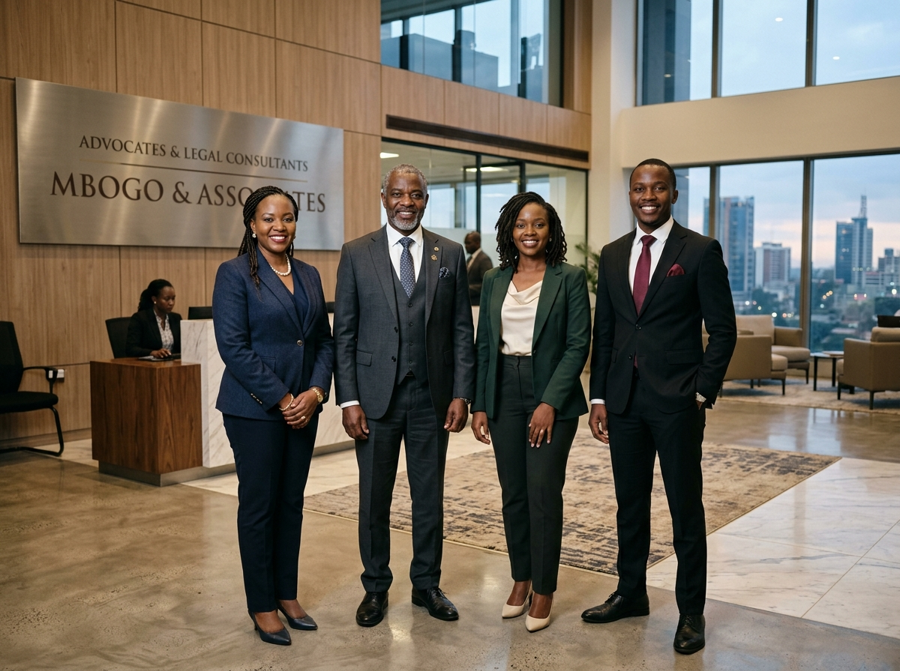

Corporate & Commercial
Corporate advisory, governance, joint ventures, mergers and acquisitions, commercial agreements and company secretarial work.
Established 1998 · Lusaka, Zambia
Strategic legal counsel for businesses, institutions and individuals navigating complex commercial, regulatory and contentious matters.
Dove Chambers Advocates
For more than two decades, Dove Chambers has advised the corporate world on transactions, disputes and legal issues that demand both technical depth and practical judgement.
The firm is recognised for work in legislative drafting, contract negotiations and project procurement, corporate advisory, mergers and acquisitions, pension funds, conveyancing, capital markets and high-level corporate litigation.
What we do
Corporate advisory, governance, joint ventures, mergers and acquisitions, commercial agreements and company secretarial work.
Commercial and civil litigation, debt recovery, securities enforcement, insurance claims, employment disputes, arbitration and mediation.
Financial facility arrangements, mortgages, debentures, securitisation and other financial and legal instruments.
Commercial and domestic conveyancing, property procurement, land documentation, subdivisions and registration of securities.
Employment advisory, labour disputes, industrial relations, contracts and representation before courts and tribunals.
Legislative analysis and drafting, electoral process work, constitutional matters, compliance and regulatory advisory.
Construction law, project procurement, contract negotiation, mining-related corporate matters and environmental issues.
Administration of estates, matrimonial and family matters, notarial services and commissioners for oaths services.

Built on significant work
The firm's profile records experience in corporate representation, liquidations and receiverships, major property conveyancing, electoral and constitutional work, development agreements, labour law, insolvency, capital markets, mining, tax and general litigation.
Conveyancing work has included Kabulonga Shopping Complex and Elunda I & II at Addis Ababa roundabout.
Participation in constitutional review and drafting processes, electoral reform work and notable constitutional litigation.
Pro bono representation through the Legal Aid Board and support for women and customary-land litigants.
Client service
Dove Chambers' profile emphasises timely delivery, active matter reporting and ready access to legal practitioners for urgent queries.
Target for security documentation after clear instructions or clarifications.
Target for lodgement schedules after receipt of executed documents and fees.
Status reports on the progression of matters, with significant developments communicated sooner.
Our lawyers
Client profile
The firm's profile lists work for organisations in engineering, construction, property, conservation, healthcare, manufacturing and traditional governance.
Start a conversation
Tell us what you need assistance with and a member of the firm can take it from there.